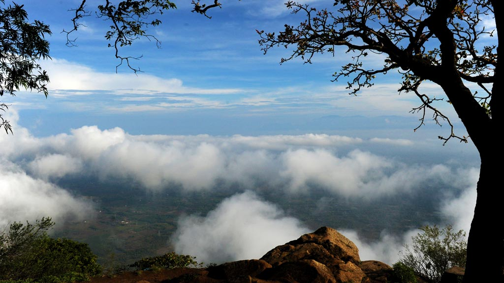

Silent Valley National Park
The eerie silence, emphasised by the missing Cicadas that gave Silent Valley its name, may make you feel and hear things you could never have imagined. A few centuries ago, before humans reached the Silent Valley, this reserve of tropical rainforests stood undisturbed and tranquil like a perfectly hidden diamond. Located in the Northeast corner of Palakkad district, Silent Valley was named a National Park only in 1984. It was called 'Sairandhrivanam' as it was here that Sairandhiri (the secret identity donned by Panchali, from the epic Mahabharata) is believed to have hidden along with her five husbands, the Pandavas, while escaping their cruel cousins, the Kauravas. The Kunthippuzha River which feeds the entire forest was named after Kunthi, mother of the Pandavas. It is shielded by the Nilgiri Plateau to the North and the Mannarkkad Plains to the South. It constitutes the centrepiece of the Nilgiri Biosphere Reserve, an integral part of the Western Ghats, christened a World Heritage Site by UNESCO in 2012. The flora and fauna found here makes one wonder if this ecosystem has survived since the very beginning of time. From tigers, leopards, elephants, snakes, Lion-Tailed Macaques and Malabar Giant Squirrels to moths, bugs and toads, the diversity in fauna is breath-taking. Along with them, one can view over 1,000 species of flowering plants and another 110 species of orchids that enchant all who see them. Over 400 species of moths and 200 species of butterflies have been catalogued here. The 128 species of beetles deserve a special mention since 10 of them were previously unknown to mankind.
Nelliyampathy Hills
From the town of Nenmara in Palakkad district, the cloud-caressed peaks of the majestic Nelliyampathy Hill ranges are a sight to behold. The height of the hills ranges from 467 m to 1,572 m and it has an extremely calming effect on all who view it. To reach Nelliyampathy, one has to take the road starting from Nenmara that proceeds to the Pothundy Dam. There are about 10 hairpin bends that have to be negotiated on the way to Nelliyampathy. The Pothundy Dam is a beautiful locale with facilities for boating and is a nice option as a picnic place. As the Ghat road winds its way up to Nelliyampathy, at certain places there are viewpoints from where the vast stretches of Palakkad district are visible with its extensive paddy fields forming a verdant carpet. It also offers a splendid view of the Palakkad Gap, which is a geographical phenomenon in the Western Ghats formation in this region, bringing into view, parts of the adjoining State of Tamil Nadu. On the way up, those interested in bio farming can take a close look at the privately managed farms and also vast expanses of tea estates managed by different plantation companies. The hills of Nelliyampathy are also well known for their orange cultivation.
Parambikulam Tiger Reserve
Nestled in the Chittur taluk of Palakkad district, this area measuring 643.66 square kilometers is home to a wide range of species. Around 40 species of mammals, 47 species of fish and 250 species of birds call this their home. They dwell alongside 124 species of butterflies and 1000 or so separate species of insects. The Terrapin perches on a log of wood as the Bison and Spotted Deer make their way to open pasture land. The Bush Frogs and Mugger Crocodiles lurk in their own spots while the egrets and Cormorants loiter around noisily. Somewhere in the forest, the squirrels give out a screech of warning. This land belongs to the majestic Tigers. Welcome to the Parambikulam Tiger Reserve, where one can still find nature in its purest and most pristine form. The name of the reserve itself is derived from two words; 'parambu' (reeds) and 'kulam'(waterhole). Inside what is considered the world’s first scientifically managed teak plantation lies the great Kannimara tree. This tree is the oldest and largest of its kind and is believed to be over 350 years old. Four adults side by side would be needed to encompass its girth. The tribals worship it as a symbol of the Gods and its magnificence is amplified by the sheer magnitude of its size and reach.
Malampuzha Dam & Gardens

Malampuzha Garden in Palakkad district is the only rock-cut garden in South India made by Nek Chand, the renowned artist and winner of the prestigious Padmashree Award. The entire garden is made from broken pieces of bangles, tiles, used plastic cans, tins and other waste materials. Also situated in the gardens is the massive Malampuzha Yakshi (female vampire) built in 1969 by Kanayi Kunhiraman, a greatly respected sculptor from the state. It is a spectacular relic of art that we are lucky to still have with us. The flowering beds, fountains and rose gardens along with an aerial ropeway make it a place that instantly soothes your soul. In the lower hills of the Western Ghats lies the beautiful Malampuzha township whose lush greenery and plethora of picnic spots make it a must-visit spot in these areas. It has really good trekking trails that are available to all with a penchant for the same. Malampuzha Gardens and the Irrigation Dam tend to be the areas that attract the highest number of visitors. Apart from being perfect picnic spots, there is a host of interesting trivia surrounding the place that adds to its appeal.
Tippu's Fort

Tipu's Fort, also known as Palakkad Fort, is a beautifully maintained edifice in Palakkad district and was an important military base in the past. Rebuilt by Hyder Ali in the 18th century, the fort was under the Mysore rulers until the British took control of the place. It was then used for providing government services during the British era. Named after Hyder's son Tipu Sultan, it is an important historical destination today. It is among the best preserved forts in South India. The thick laterite walls impress all who view it. People frequent the spot for relaxing walks and jogs. A large ground that lies between the Fort and the Palakkad town hall is an important location for public meetings and important functions. Today it is a protected monument under the Archaeological Survey of India. It is a preferred picnic spot for everyone visiting Palakkad.